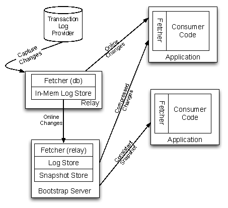
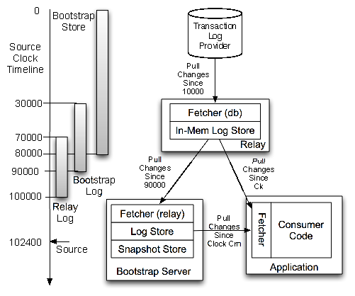
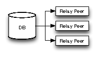
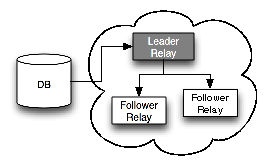
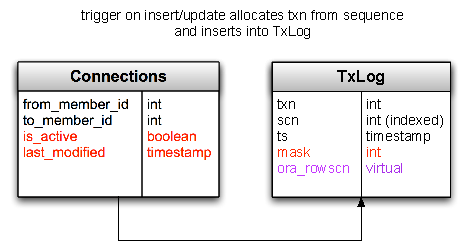
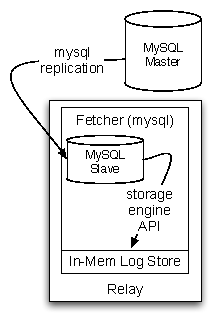
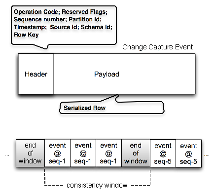
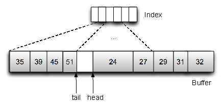
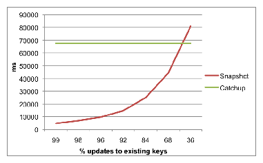

October 14-17, 2012, San Jose, CA USA
All aboard the Databus!
All aboard the Databus!
Linkedin Databus Team
Abstract
In Internet architectures, data systems are typically categorized into source-of-truth systems that serve as primary stores for the user-generated writes, and derived data stores or indexes which serve reads and other complex queries.
The data in these query or index stores is often derived from the primary data through custom transformations, sometimes involving complex processing driven by business logic. Similarly data in caching tiers is derived from reads against the primary data store, but needs to get invalidated or refreshed when the primary data gets mutated. A necessary consequence of this kind of heterogeneous data architecture is the need to reliably capture, flow and process data changes happening in the primary data stores.
We have built Databus, a source-agnostic distributed change data capture system, which is an integral part of LinkedIn's data processing pipeline. The Databus transport layer provides latencies in the low milliseconds and handles throughput of thousands of events per second per server while supporting infinite lookback capabilities and rich subscription functionality. This paper covers the design and implementation and tradeoffs of the latest generation of Databus technology, experimental results from stress-testing the system and describes our experience supporting a wide range of LinkedIn production applications built on top of Databus.
1 Introduction
As most practitioners in the domain of data management systems are discovering, One Size doesn't Fit All [13]. Today most production data management systems are following something similar to a fractured mirrors approach [12]. Primary OLTP data-stores take user-facing writes and some reads, while other specialized systems serve complex queries or accelerate query results through caching.
The most common data systems found in these architectures include relational databases, NoSQL data stores, caching engines, search indexes and graph query engines. This specialization has in turn made it extremely important to build scalable data pipelines that can capture these changes happening for primary source-of-truth systems and route them through the rest of the complex data eco-system.
There are two ways one can go about building this.
- External Commit Log: In this model, we write to the database and in parallel write to another messaging system. This looks simple to implement since the application code writing to the database is under our control. However it introduces a consistency problem because without a complex coordination protocol (e.g. Paxos [10]) it is hard to ensure that both the database and the messaging system are in complete lock-step with each other in the face of failures. Both systems need to process exactly the same writes and need to serialize them in exactly the same order. Things get even more complex if the writes are conditional or have partial update semantics. Statement-based replication only works well for keeping two similar systems in sync.
- Log Mining: In this model, we make the database the source-of-truth, extract changes happening to the database and flow them through to the secondary data stores. This solves our consistency issue, but is challenging because databases like Oracle and MySQL (the primary data stores in use at LinkedIn) have transaction log formats and replication solutions that are proprietary and not guaranteed to have stable on-disk or on-the-wire representations across version upgrades. Since we want to process the data changes with application code and then write to secondary data stores, we need the replication system to be user-space and source-agnostic. This independence from the data source is especially important in growing companies, because it avoids technology lock-in and tie-in to binary formats for downstream consumers.
After evaluating the pros and cons of the two approaches, we decided to pursue the "log mining" option, prioritizing consistency and "single source of truth" over ease of implementation.
In this paper, we introduce Databus, LinkedIn's Change Data Capture pipeline, which supports Oracle and MySQL sources and a wide range of downstream applications.
The Social Graph Index which serves all graph queries at LinkedIn, the People Search Index which powers all searches for members at LinkedIn and the various read replicas for our Member Profile data are all fed and kept consistent via Databus.
In the rest of the paper, we focus on Databus' unique architectural features:
- Pull-model
- Externally-clocked
- Consumption from arbitrary point in time: integrated with the in-flight pipeline
- Isolation between sources and consumers: both in terms of performance and semantics
While building Databus, we've encountered some practical design and implementation issues which we also cover in this paper.
In particular, we discuss implementation details and performance measurements around:
- Event definition, serialization and portability
- Minimizing load on the data source
- Filter push-down and partitioned consumption
- Achievements in scalability, high-availability and low latency

Figure 1: LinkedIn: Databus applications
2 Requirements
We had the following requirements while designing Databus.
[I]
- No additional point of failure:
Since the data source is the source of truth, we want to ensure that the pipeline does not introduce a new point of failure in the architecture.
- Source consistency preservation:
We want to preserve the consistency semantics that the source provides.
This implies needing to support the strongest consistency semantics possible.
We do not support cross database transactions in the source.
For transactional sources, to avoid having the subscribers see partial and/or inconsistent data we need to capture:
- Transaction boundaries: a single user's action can trigger atomic updates to multiple rows across stores/tables.
- Commit order: the exact order in which operations happened on the primary database.
- Consistent state: we can miss changes but cannot provide a change-set that is not consistent at a point in the commit order. e.g. if a row got updated multiple times in quick succession, it is okay to miss an intermediate update, but not okay to miss the last update.
- User-space processing:
By "user-space processing", we refer to the ability to perform the computation triggered by the data change outside the database server. This is in contrast to traditional database triggers that are run in the database server.
Moving the computation to user space has the following benefits:
- Reduces the load on the database server
- Avoids affecting the stability of the primary data store
- Decouples the subscriber implementation from the specifics of the database server implementation
- Enables independent scaling of the subscribers
- No assumptions about consumer uptime:
Most of the time, consumers are caught up and processing at full speed. However, consumers can have hiccups due to variance in processing time or dependency on external systems, and downtime due to planned maintenance or failures. Sometimes, new consumers get added to increase capacity in the consumer cluster and need to get a recent snapshot of the database. In other cases, consumers might need to re-initialize their entire state by reprocessing the whole data set, e.g. if a key piece of the processing algorithm changes.
- Isolation between Data-source and consumers:
Consumers often perform complex computations that may not allow a single instance to keep up with the data change rate. In those cases, a standard solution is to distribute the computation among multiple instances along some partitioning axis.
Therefore, the pipeline should
- Allow multiple subscribers to process the changes as a group; i.e. support partitioning;
- Support different types of partitioning for computation tasks with different scalability requirements;
- Isolate the source database from the number of subscribers so that increasing the number of the latter should not impact the performance of the former;
- Isolate the source database from slow or failing subscribers that should not negatively impact the database performance;
- Isolate subscribers from the operational aspects of the source database: database system choice, partitioning, schema evolution, etc.
- Low latency of the pipeline: Any overhead introduced by the pipeline may introduce risk of inconsistencies, negatively affect performance, or decrease the available time for the asynchronous computations. For example, any latency in updating a secondary index structures (like the previously mentioned LinkedIn social graph index) increases the risk of serving stale or inconsistent data. In the case of replication for read scaling, pipeline latency can lead to higher front-end latencies since more traffic will go to the master for the freshest results.
- Scalable and Highly available: We need to scale upto thousands of consumers and support thousands of transaction logs while being highly available.
3 Design or Architecture?

Figure 2: Databus Architecture
- a fetcher which extracts changes from the source,
- a log store which caches this change stream,
- a snapshot store which stores a moving snapshot of the stream, and
- a subscription client which pulls change events seamlessly across the various components and surfaces them up to the application.
The typical deployment architecture for these components is shown in Figure 2. We collocate the fetcher and an in-memory log store in a process we call the relay process. We additionally collocate a persistent log store and the snapshot store in a process we call the bootstrap server. The subscription client is a library that is linked into the application that needs to consume changes from the stream. For a new type of data source technology (say PostgreSQL), the only component that needs to change in this architecture is the implementation of the fetcher.
3.1 Consistency Semantics
Databus supports transactional semantics across multiple types of entities within a transactional datastore. For example, it can annotate and propagate transactions that span multiple tables within the same database. It supports guaranteed at-least once delivery semantics by default. A single event is delivered multiple times only in the case of failures in the communication channel between the relay and the client, or in case of a hard failure in the consumer application. Consumers therefore need to be idempotent in the application of the delivered events or maintain transactional commit semantics aligned with the source. The guarantee of lossless delivery is provided by the end-to-end pull architecture in Databus. Every failure can be recovered from by going up the chain and re-pulling from the checkpoint of the failure point.
3.2 External Clock and Pull Model
The overarching design principle of Databus is that it is simply a lossless transporter of changes that have been committed upstream. Each change set is annotated with a monotonically increasing system change number (SCN). As changes flow through the ecosystem, derived state gets created by consumers and is associated back to the change stream through this number. This is important not just for auditing, but also to recover from failures and resume processing without missing any changes. The system therefore is externally clocked. All parts of the Databus infrastructure track the lineage of data records and the progress of consumers using only the SCN of the external system. Physical offsets are only used as optimizations in internal transport but are never used as source of truth.
Figure 3 shows the interactions between the different fetcher components and the source clock across the relay, bootstrap log and snapshot store. In this example, the source has generated changes until sequence number 102400, the relay has an in-memory buffer that covers all changes from 70000 to 100000, the bootstrap server's persistent log covers all changes from 30000 to 90000, and the bootstrap server's snapshot store covers all changes from 0 to 80000. Depending on where the consumer is currently at, it will pull from either the relay or the bootstrap server.

Figure 3: Pull Model and Source Clock
3.3 Source Data Extract
Databus has been designed to support extraction from different data sources. Therefore there are semantic constraints that each fetcher must follow.
As described above, each change set is annotated with a monotonically increasing clock value which we refer to as the system change number (SCN) of the change set.
The fetcher is initialized with an SCN on startup, and starts pulling changes that are newer than this SCN from the data source. This adds a "rewindability" requirement on the data source.
The data source must be able to keep enough history in its change log or the fetcher must be written in a way that supports going back to pull from an arbitrary point in time. In practice, this requirement does not add extra complexity on the source as long as this lookback window is bounded (within a day or two).
The way the Oracle fetcher is written, it can go back all the way to time zero, but that support is only possible at the cost of queries that get progressively expensive.
The MySQL fetcher can rewind back to as much time as the storage on the MySQL machine will allow to retain. This centralization of complexity onto the fetcher component leads to very simple persistence and failure-recovery protocols downstream.
3.4 The Relay
The Databus relay hosts a fetcher, a transient log and an HTTP server within a single process. The fetcher is a pluggable entity and can be used to fetch changes from a source or from another relay. The pluggability allows us to develop different adapters for different data sources as well as arrange relays in fan-out tree configurations for scaling out.
The fetcher's responsibility is to extract the changes, then serialize the changes to a data source independent binary format. The serialized changes are grouped together by transaction window boundaries and are annotated with the clock value associated with the transaction. These changes are handed out to consumers when they request them. The consumers request changes based on the source clock, asking for all changes since time t where t is the last clock value for which changes have been processed at the consumer.
The relay is stateless in the sense that it does not track where consumers are in the timeline. This simplifies the relay's implementation but requires a time or size-based retention policy. In practice, we over-provision the relay to keep multiple days worth of buffer which is enough to ensure that all the caught-up and online consumers can consume the whole stream while just consuming from the relay.
3.4.1 Relay Cluster Deployment
Typical Databus deployments consist of a cluster of relay servers that pull the change stream from multiple database servers. Each relay server can connect to multiple database servers and host the change stream from each server in separate buffers in the same relay. The relays are also set up in such a way that the change stream from every database server is available in multiple relays, for fault-tolerance and for consumer scaling. There are two configurations the relays are typically deployed.

Figure 4: Independent Relays Deployment

Figure 5: Leader-Followers Relays Deployment
3.5 The Bootstrap Service
As we have described previously, consumers typically subscribe to changes from the relay, which maintains an in-memory log store. Occasionally, there are situations in which the consumers might fall significantly behind in their processing. This usually happens because of consumer failures, which cause them to be offline for an extended period of time. In other cases, new consumers are launched and they need to bootstrap their initial state before consuming the change log from the relay.
Possible approaches for dealing with these situations are going back to the source OLTP database and storing extended log at the relays. The first approach is not acceptable since it leads to greatly increased load on the database that is serving online traffic. Besides, getting a consistent snapshot of all the rows in the OLTP database by running a long running query is very difficult. Storing the log at the relay for extended periods of time is not always viable since if the consumer has fallen behind a lot, consuming every change event is likely to be slow and unnecessary. It is much more efficient to catch up using a snapshot which is a compressed representation of the changes i.e. only the latest state of every affected row needs to be consumed.
Databus implements this functionality using a Bootstrap Service. The bootstrap service consists of three components:
- a bootstrap database: This has two parts. One is a persistent log store that maintains the change log for an extended time. The other is a snapshot of the data that represents the view of the database at a given point in time.
- a bootstrap producer: This acts as a regular Databus client, subscribes to the change log from the relay and writes it to the log store in the bootstrap database.
- and a bootstrap applier: This periodically merges the changes from the log store into the snapshot.
Splitting the responsibilities between the log store writer and the applier has two advantages. First, it keeps the change log persistent over an extended period of time so that consumers that fall behind and do not find changes on the relay can catch up using the log in the bootstrap database. Second, it is able to handle long transactions on the source OLTP database easily since appending to the log is much cheaper than building the snapshot. This ensures that the bootstrap database has enough write throughput to keep up with the source.
On the consumer side, when a consumer needs to bootstrap, it needs to obtain the change events from both the snapshot and log store so that the combination yields a consistent change set. This is complicated by the fact that the bootstrap producer is updating the snapshot simultaneously. Getting a consistent read of the snapshot by locking the snapshot is not efficient when it is large. Instead the consumer must constantly be allowed to make progress by pulling rows in manageable batch sizes while applier is merging changes from the log store. Since the snapshot data might change across batches, this results in an inconsistent read of the data during the time rows are being read from the snapshot store. In order to guarantee consistent read at the end of the bootstrapping phase, bootstrap service uses the following algorithm to deliver changes to the consumer.
#1Bootstrap Consumptionbootstrap(sources)
startScn = current scn of the bootstrap db
Source Sj (j < i) is consistent as of startScn
Get all rows from Si where rowScn < startScn
targetScn = max SCN of rows in Si
Get all rows from Sj log store from startScn until targetScn
startScn = targetScn
3.6 Event Model and Consumer API
There are two versions of the consumer API, one that is callback driven and another that is iterator-based.
At a high-level, there are eight main methods on the Databus callback API.
- onStartDataEventSequence: the start of a sequence of data events from an events consistency window.
- onStartSource: the start of data events from the same Databus source (e.g. Oracle table).
- onDataEvent: a data change event for the current Databus source.
- onEndSource: the end of data change events from the same Databus source.
- onEndDataEventSequence: the end of a sequence of data events with the same SCN.
- onCheckpoint: a hint from the Databus client library that it wants to mark the point in the stream identified by the SCN as a recovery point
- onRollback: Databus has detected a recoverable error while processing the current event consistency window and it will rollback to the last successful checkpoint.
- onError: Databus has detected a unrecoverable error and it will stop processing the event stream.
.
The above callbacks denote the important points in the stream of Databus change events. A typical sequence of callbacks follows the pattern below.
onStartDataEventSequence(startSCN)
onStartSource(Table1)
onDataEvent(Table1.event1)
...
onDataEvent(Table1.eventN)
onEndSource(Table1)
onStartSource(Table2)
onDataEvent(Table2.event1)
...
onDataEvent(Table2.eventM)
onEndSource(Table2)
...
onEndDataEventSequence(endSCN)
Intuitively, the Databus client communicates with the consumer: "Here is the next batch of changes in the watched tables (sources). The changes are broken down by tables. Here are the changes in the first table, then the changes to the next table, etc. All the changes represent the delta from the previous consistent state of the database to the following consistent state."
The contract on all of the callbacks is that the processing code can return a result code denoting a successful processing of the callback, recoverable or unrecoverable error. Failures to process the callback within the allocated time budget or throwing an exception, results in a recoverable error.
In cases of recoverable errors, the client library will rollback to the last successful checkpoint and replay the callbacks from that point.
The offloading of state-keeping responsibility from the consumer simplifies the consumer recovery. The consumer or a newly spawned consumer can rewind back to the last known good checkpoint. For instance, if the consumer is stateful, they just need to tie the state that they are keeping with the checkpoint of the stream. On failure, the new consumer can read the state and the checkpoint associated with it and just start consuming from that point. If the stream consumption is idempotent, then the checkpoint can be maintained lazily as well.
3.7 Partitioned Stream Consumption
Databases are often partitioned horizontally for scalability. As the read and write load changes, databases will get repartitioned repeatedly. A consumer who is subscribing to the change stream from a database must be able to do so independent of the partitioning of the database. Often the change stream will be too fast for a single consumer to process and the processing needs to be scaled out across multiple physical consumers who act as a logical group. In case of partitioned sources, currently Databus enforces the transactional semantics only at the partition level.
Databus implements the notion of a consumer group, using the generic cluster manager Helix. The partitions of the database are assigned to the consumers in the same group so that every partition has one and exactly one consumer in the group assigned to it and the partitions are evenly distributed among the consumers. When any consumer fails, Helix rebalances the assignment of partitions by moving the partitions assigned to the failed consumer to the surviving consumers. If the existing consumers in the group are not able to keep up with the stream, additional consumers might be added to the group to scale the processing. In this case, the assignment of partitions is rebalanced so that some partitions from each existing consumer are moved to the new consumers.
3.8 Metadata

Figure 6: Oracle table mapped to Avro schema
4 Implementation Notes
4.1 Oracle Adapter
Oracle provides replication support between Oracle databases using DataGuard. Additionally, there are commercial products like GoldenGate (from Oracle) that make the change log from Oracle available to external applications. However, there is no open-source technology available that provides this support.
A simple approach to get the change log from Oracle is to have a timestamp column with every row. A trigger on the table updates the timestamp column with the current time on an insert or update to the row as shown in Figure 7. The adapter then issues a query to the database to get all the changed rows.

Figure 7: Timestamp based CDC attempt

Figure 8: Timestamp based CDC: commit reordering
update T set scn = ora_rowscn
where scn = infinity;
The query to select the changed rows since lastScn now becomes
select * from T
where scn > lastScn
AND ora_rowscn > lastScn;
This works to get changes from a single table. However, transaction can span multiple tables in a database and these changes need to be transported to the consumer while preserving the transaction boundary. To solve this, we add a per database table TxLog that has the indexed scn column. We add a txn column to all the other tables that we wish to get changes from. We have a trigger than allocates txn from a sequence and adds an entry to the TxLog table on every transaction commit as shown in Figure 9.

Figure 9: Trigger based CDC
select src.* from T src, TxLog
where scn > lastScn
AND ora_rowscn < lastScn
AND src.txn = TxLog.txn;
4.2 MySQL Adapter
The trigger-based approach used by the Oracle adapter has a couple of drawbacks. Firstly, it can miss intermediate changes to rows because it is only guaranteed to return the latest state of every changed row. This is not a correctness problem, but if possible, it is desirable to surface every change made to the row to the consumer.
Secondly, triggers and the associated tables that they update cause additional load in terms of reads and writes on the source database.
It is more preferable to interact directly with the transaction log if that is possible, since that does not take up resources on the source database.
Oracle and MySQL both have binary logs which contain the log of changes as they are applied to the database. However, it is fragile to mine these logs and reverse-engineer the structure, because there is no guarantee that the format will be stable across multiple versions. In the case of MySQL though, it is possible to tap into the Storage Engine API which is a stable interface that has been used to build many commercial and open-source pluggable storage engines.
MySQL replication works only between MySQL databases and does not make the change log available to external applications. The pluggable storage engine layer allows MySQL replication to be setup between MySQL databases that might use different storage engines.
Thus a MySQL server using InnoDB storage engine can replicate to MySQL server using the MyISAM storage engine. MySQL replication takes care of the protocol between master and slave, handling restarts across failures, parsing of the binary log and then calling the appropriate insert, update, delete statements on the slave through the storage engine API. Databus uses this feature of MySQL and obtains the change log from the MySQL master into a custom storage engine RPL_DBUS which writes to the in-memory log. This architecture is shown in Figure 10. The relay manages the local slave MySQL instance and uses MySQL admin commands to connect to the MySQL master.

Figure 10: MySQL Adapter
4.3 Relay Internals

Figure 11: Change Capture Window Format

Figure 12: Buffer and Index Data Structures
- Off-heap: Processes that allocate large amounts of long-lived memory inside the Java Virtual Machine (JVM) tend to suffer from garbage collection related performance issues. In fact, the original implementation of the Databus relay log had this problem. We therefore decided to keep the buffer allocated outside the JVM heap.
- Space-bound: With multi-tenancy in mind, we wanted to support setting limits on how much space the buffer could use. This naturally led us to build it as a circular buffer with the changes pre-serialized and inline. This supports very fast insert performance and also naturally supports range scans. There is no new memory allocated after the relay starts up, which leads to very stable and predictable performance.
- Indexed: Since the range scans are based on an external clock, we also need an index to speed up the scans. To do this, we use another bounded circular buffer which functions as a skip-list on top of the buffer. Thus the total amount of memory that a particular log needs is always bounded. We trade-off some scan latency for space in this case.
- Concurrent: The circular design forces us to consider writes and readers potentially stepping on each others toes. Simple reader-writer locks create too much contention and limit throughput unnecessarily. Region-based locking increases throughput somewhat but still penalizes the common case when readers are caught up with the writer. In this case, there is one hot region at the tail end of the buffer where writes are happening after the tail, and reads are happening just before the tail. Using range-based locking in this case solves this problem quite elegantly, and ensures maximal read-write throughput for non-colliding reads and writes. In practice, we hardly see any contention in real workloads because readers and writers are pretty much in lock-step most of the time. However when the readers start falling behind, their range lock eventually conflicts with the writer's range lock, and then get evicted off the relay.
- Filtering: We support server-side filtering by brute-force scanning the changes and streaming out only the events that match the subscriber's filter pattern. For mmapped buffers, we avoid double-copying between user-space and file-system, and yet retain the ability to filter out data when we stream it out.
An important point to note is that the relay is a stateless service and does not track where consumers are in the timeline. This simplifies the relay's implementation but requires a time or size-based retention policy. In practice, we over-provision the relay to keep multiple days worth of buffer which is enough to ensure that all the caught-up and online consumers can consume the whole stream while just consuming from the relay. Using mmapped buffers allows us to provision more than the amount of available physical memory on the relay node. The predictable pattern of sequential read and write along with the locality of access (writer is always writing at the tail, readers are typically very close to the tail) means that only the most recent pages need to be in memory.
stream(checkpoint, sources, filters, maxBytes, channel)
#1Databus Relay Stream Algorithm
Consult index to determine the start of the scan
Acquire read range lock from scanOffset to tail
write event to the channel
write endOfStreamMarker to the channel
The pseudo-code for the primary stream call is documented at Algorithm 4.3. The primary input parameters into this call are the consumer's checkpoint, the list of tables they are interested in and any subscription filters that they want to apply additionally on the changes. The stream call first determines the scan offset to begin the scan, then acquires a read range lock from the offset to the tail of the buffer. It then iterates through the buffer streaming out any events that match the filter. The stopping condition is either reaching the end of the buffer or hitting the maximum size limit set by the consumer.
4.4 Client Library Internals
The Databus client library is the glue between the Databus infrastructure (relays, bootstrap servers)
and the Application (business logic in the consumer).
The library is responsible for connecting to the appropriate relay and bootstrap server clusters, keeping track of progress in the Databus event stream and switching over automatically between the Relays and Bootstrap servers when necessary.
The client runs a fetcher thread which is pulling continuously from the relay and a dispatcher thread which fires callbacks into a pool of worker threads. There is local flow control between the fetcher and the dispatcher to ensure a steady stream of Databus events to the consumer. Two forms of multi-threaded processing is supported. The first type allows multi-threaded processing within a consistency window only. This ensures that consistency semantics are maintained at the destination. The second type allows multi-threaded processing without regard to the transaction window boundaries. This provides higher throughput at the consumer at the cost of relaxed consistency.
The client maintains state of where it is in the sequence timeline through a pluggable CheckpointPersister which can be overridden by the application. By default, a checkpoint is persisted to disk for every successfully-processed consistency window. Applications that need very close control of the checkpoint will often implement their own storage and restore for checkpoints to tie it to their processing state.
5 Experiments
In this section, we present our findings from a set of performance experiments that we ran to test the scalability characteristics of Databus.
5.1 Experimental setup
We ran our experiments on two types of machines:
- Relays and client machines - 12 core 2.56GHz Intel Xeon machines with 48 GB RAM, 1TB SATA RAID 0 and 1Gbps Ethernet
- Bootstrap servers - 12 core 2.40GHz Intel Xeon machines with 48 GB RAM, 800GB 15K SAS RAID 1+0 and 1Gbps Ethernet
There were three main parameters that we varied:
- Produce rate - the rate at which events were incoming at the relay buffer
- Number of consumers - number of services that were consuming events from relays and bootstrap servers
- Consumer poll interval - how frequently the consumers were polling the relays for new events
For all experiments, we used moderately-sized events with a size of 2.5KB.
The metrics we measured were
- Throughput - the number of events or bytes per second the relay can send out to all consumers or a consumer can read from a relay
- E2E event latency - the time it takes for an event to propagate from the relay to the consumers
5.2 Relay scalability
Figure 13 shows the first set of experiments where we measured the maximum outbound throughput that a relay can support to consumers. We used a relay with an already pre-filled buffers and measured the maximum speed at which multiple clients can read from the relay. We also varied the frequency at which consumers poll the relay. The latter parameter allowed us to test what is the impact of pulling less frequently but in bigger batches of events. We expected that less frequent but bigger batches will allow the relay to support larger number of consumers.

Figure 13: Relay throughput scalability depending on poll interval

Figure 14: Throughput at consumers when varying update rate

Figure 15: Latency to consumers
5.3 Bootstrap scalability
For our bootstrap performance experiments, we focused on the interesting and novel aspect of the bootstrap server: the ability to serve compressed deltas of events instead of replaying all updates.
For this experiment, we introduced a new parameter: the ratio between updates to existing keys (including deletes) versus the total number of change records. This parameter models the benefit of returning only the latest version of the value for a given key. The goal of the experiment is to find the point at which the cost of finding the smaller number of changes in delta which have potentially worse layout on disk meets the cost of the sequential scan over the larger-sized log store.

Figure 16: Time to bootstrap 1 hour of changes using a Snapshot delta or Catch-up log
6 Experience in Production
Databus has been in production at Linkedin since its early days. It was originally developed to keep the graph engine in sync with the primary Oracle database.
The original architecture is shown in Figure 17. It provided the consistency semantics that we needed, and basic support for table-level subscription, but with growth in traffic, number of consumers and the complexity of usecases, the original implementation started showing some scalability and operability limitations. The latest round of changes to the architecture and implementation has addressed a majority of these issues. In this section, we look at how we fared, lessons learnt and some open problems left to solve.

Figure 17: LinkedIn: Databus Architecture circa 2007
6.1 The Good
- Source Isolation: In the original implementation of Databus, when a consumer fell too far behind, it would get proxied through to the source database. Our experience has shown that there are many reasons why clients often fall behind by a lot in unexpected ways. The most common cases happen when clients bootstrap themselves with state from data in offline systems like Hadoop, and then come online and have to catch-up a week's worth of data. Another set of cases arise due to software bugs. There have been cases where "bad" or unprocessable data has been written to the database or the consumer logic had bugs which made it choke on a particular event. Since the Databus framework provides in-order delivery guarantees, it retries some number of times and eventually stops.
A third category of reasons are bursts or spikes of activity on the primary datasets, where downstream consumers which are typically provisioned for consuming the steady flow of events during normal operation, are unable to keep up with bursts of data and start falling behind. As explained in the Oracle fetcher implementation, the further the consumers fall behind, the more expensive the pull queries get, so a problem on the consumer side gets translated to a problem on the source database. When we added the Bootstrap database to the Databus architecture, we took away the capability of the consumer to impact the source database in this way. Now, catch-up queries from consumers that are very far behind are served off of the bootstrap database which is isolated and optimized for this purpose. In this way, we've managed to reduce load on the source databases enormously while being able to keep up with the client demands easily. We routinely see clients seamlessly connecting to the bootstrap service, sometimes on a daily basis but just catching up quietly without raising any alarm bells.
- Common Data Format: The original implementation of Databus used hand-written Java classes to represent the table rows, and serialized them using Java serialization. This created two problems. Firstly, everytime the table's schema was changed, someone would have to hand-edit the Java class; secondly, because the Java serialization of that object was not backwards compatible with the previous version of the object, all downstream consumers would need to get upgraded to pick up the new class definition. The workaround for this problem was to create a new view everytime the schema was changed, essentially creating one view per schema version on the database, and one copy of the event per version. As consumers evolved to picking up the new versions of the classes, the old views could be retired. In practice, consumers rarely had incentive to upgrade unless they needed the extra fields, thus the old views tended to stay around forever. The utilization of the relay buffer would worsen because each event would get serialized multiple times for each view version. In our latest changes, we moved to Avro, got rid of the multiple versions and this gave us an immediate performance win of 300% in terms of read and write load on the source database as well as utilization of the relay buffer.
- Rich subscription support: At LinkedIn we see a wide variety of consumers which are themselves partition-aware. For example, our distributed search system has many hundreds of nodes and each node only indexes a fraction of the complete data set.
Often, different consumers want different partitioning functions or axes, and it is an organizational challenge to force everyone to agree to the same partitioning model. For example, our search engine
uses range-based partitioning, while our relevance engine uses mod-based partitioning. Earlier, all the individual machines would pull the entire stream and filter it client-side by dropping the events that they were not interested in. When we added server-side filtering to Databus, we allowed consumers to specify their filtering function while subscribing to the sources. This has resulted in huge network savings of more than 40 times the earlier bandwidth requirements.
6.2 The Bad
We haven't solved all our problems yet. There are a few open issues that we are thinking deeply about and working on.
- Oracle Fetcher performance: Our experience has shown several factors that can negatively affect the performance of the Oracle fetcher:
- Complex join views used as Databus sources as those views have to be evaluated at fetch time
- Having large BLOBs and CLOBs as part of the row as these can incur additional disk seeks to read
- Very high update rate can cause increase load on the SCN update job; this affects the effectiveness of the indexes on the TxLog table.
- Seeding the Bootstrap DB: Seeding the Bootstrap database with large data sets from the primary store can be a challenge because of the need to extract a consistent snapshot of the data. Since stopping the writes to the primary store to seed the Bootstrap database is rarely an option, we either have to procure additional hardware to load stable backup or devise an efficient restartable algorithm that can read the data out of the primary store in small chunks while guaranteeing that no updates are going to be missed and that all transactions that happen during the seeding process are fully applied at the end. We chose to use the second approach. What our production experience has shown is that sources with complex joins and/or large BLOBs can negatively affect seeding performance. In some cases with complex joins, we have used dumps of the source tables and computed the joins offline. With such an approach, the main challenge is ensuring that the offline join produces exactly the same results as if it was performed by the primary store, because the two table dumps may not be consistent with each other.
7 Related Work
Before we look at related work in this area, it's important to understand the context in which change data capture is implemented in internet stacks. The common problem in this space is to make the changes to data in online databases available to various specialized systems. There are many different ways this problem gets solved, each with a different set of tradeoffs.
Using a single shared data layer e.g. sharded MySQL usually works for online processing but data must still be made available to Data Warehouses and other offline processing systems such as Hadoop. A different approach is to build on top of infrastructure such as GFS [8] that can be used for both online and offline usecases.
Another common technique is to have the applications or mid-tier services do dual writes to the primary data layer as well a messaging system or write to a messaging layer first and then to the data layer [3]. This works in situations where data loss and/or consistency problems are acceptable, or there is a single application that the problem can be solved for. Linkedin has a complex ecosystem of specialized systems that solve very specific problems so it's not possible to do this. Also Linkedin has a large number of paying customers who demand high fidelity of their user data and ensuring a good user experience requires that the data pipelines preserve consistency and avoid data loss. Organic growth in the application space also required solving the change data capture problem in a scalable manner, while not sacrificing data consistency and reliability.
- Full featured CDC systems: Many CDC systems such as Oracle DataGuard [5] and MySQL replication [4] are restricted to replicating changes between specific source and destination systems. Other products such as Oracle Streams [14] also make the change stream available through user APIs. Systems such as Golden Gate [6] and Tungsten Replicator [7] are capable of replicating from different sources to different destinations. But these are designed for usecases where the number of destinations is reasonably low and where consumers have a high uptime. In cases where consumer uptime cannot be guaranteed, seamless snapshotting and arbitrarily long catchup queries must be supported. Most CDC systems are not designed for these scenarios.
CDC systems are also designed to be either push based or pull based. In push based systems, the source pushes changes to configured destinations. These are better suited for cases where low latency is desired but generally assume that destinations are reasonably low in number and largely available. Pull based systems on the other hand are better suited for consumers who may not be available at all times but have better support for batched consumption e.g. ETL into data warehouses.
Our usecases require us to support both these usecases efficiently.
- Generic messaging systems
Messaging systems are sometimes used as transport to carry CDC data. There are some key tradeoffs here. Messaging systems such as Kafka [9] and ActiveMQ [1] typically provide publish-subscribe API where publishers are responsible for pushing changes to the messaging system, which is then responsible for guaranteeing the fate of the messages. This typically results in the messaging system acting as a source-of-truth system and it's much harder for the system to go back to the publisher and ask for data if there is loss or corruption in the messaging system. Being a source-of-truth also leads to the messaging systems to add their own overhead via persistence, internal replication etc. Since CDC systems have an external source-of-truth, this overhead is unnecessary.
8 Conclusion and Future Work
In this paper, we've introduced Databus, LinkedIn's change data capture pipeline.
Databus supports partitioned and non-partitioned transactional sources, very granular subscription capabilities and full re-processing of the entire data set while providing very low latencies and scaling to thousands of consumers with diverse consumption patterns.
The interesting challenges we faced were mostly in the areas of:
- low-level systems design in building a low-latency high-throughput buffer that can scale to arbitrary size while supporting deep filtering on records.
- building an algorithm that can support consumers catching up from arbitrary points in time while maintaining a bounded amount of persistent state.
- layering the architecture in a way that is conducive to integration with a variety of data source technologies and amenable to flexible deployment strategies.
Databus will be used as the internal replication technology for Espresso [11], our distributed data platform solution. Databus will also provide external subscribers the capability to listen to the changes happening to the base dataset. We intend to explore some interesting avenues in the future.
- Relay-Client Protocol: The current relay-client protocol is poll based. The client polls frequently to fetch new changes. With lots of clients polling frequently, this can lead to unnecessary resource utilization at the relay. We plan to add support for a streaming protocol, so that the client can make a request and just continue to read new changes off the response stream. This will lead to lower latencies as well as lower resource consumption.
- User defined processing: The current subscription model allows consumers to pass in pre-defined filters for the changes that they are interested in consuming. We would like to extend that to support running user-defined processing on top of the stream.
- Change-capture for eventually consistent systems: Our current implementation requires the source to provide a single transaction log or a set of partitioned transaction logs. Systems like Voldemort [11] do not fit into either category. It would be interesting to extend Databus to support such systems as data sources.
References
- [1]
-
ActiveMQ.
http://activemq.apache.org/.
- [2]
-
Avro.
http://avro.apache.org.
- [3]
-
Gizzard.
https://github.com/twitter/gizzard.
- [4]
-
MySQL Replication.
http://dev.mysql.com/doc/refman/5.0/en/replication.html.
- [5]
-
Oracle DataGuard.
http://www.oracle.com/technetwork/database/features/
availability/dataguardoverview-083155.html.
- [6]
-
Oracle GoldenGate.
http://www.oracle.com/technetwork/middleware/
goldengate/overview/index.html.
- [7]
-
Tungsten Replicator.
http://www.continuent.com/solutions/tungsten-replicator.
- [8]
-
S. Ghemawat, H. Gobioff, and S.-T. Leung.
The google file system, 2003.
- [9]
-
J. Kreps, N. Narkhede, and J. Rao.
Kafka: a distributed messaging system for log processing, 2011.
- [10]
-
L. Lamport.
The part-time parliament.
ACM Trans. Comput. Syst., 16(2):133-169, 1998.
- [11]
-
LinkedIn Data Infrastructure Team.
Data infrastructure at LinkedIn.
In ICDE, 2012.
- [12]
-
R. Ramamurthy, D. J. DeWitt, and Q. Su.
A case for fractured mirrors.
In Proceedings of the 28th international conference on Very
Large Data Bases, VLDB '02, pages 430-441. VLDB Endowment, 2002.
- [13]
-
M. Stonebraker, S. Madden, D. J. Abadi, S. Harizopoulos, N. Hachem, and
P. Helland.
The end of an architectural era: (it's time for a complete rewrite).
In Proceedings of the 33rd international conference on Very
large data bases, VLDB '07, pages 1150-1160. VLDB Endowment, 2007.
- [14]
-
L. Wong, N. S. Arora, L. Gao, T. Hoang, and J. Wu.
Oracle streams: a high performance implementation for near real time
asynchronous replication, 2009.
File translated from
TEX
by
TTH,
version 4.03.
On 22 Sep 2012, 18:28.